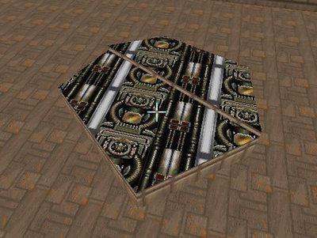
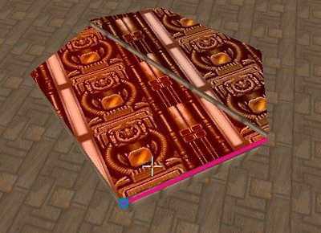
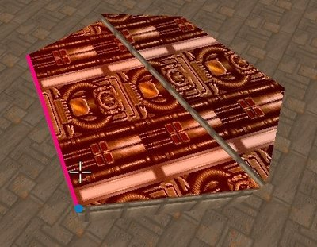
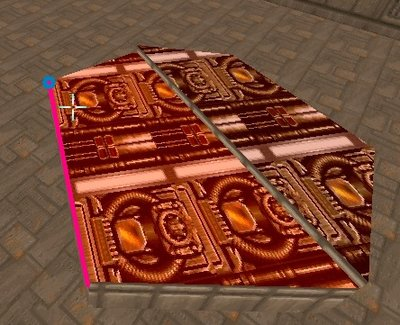
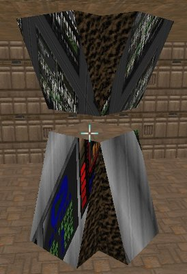
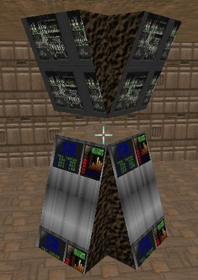

“自动对齐贴图”动作可作用于地板和天花板。其工作方式如下：
- 从高亮的扇区中选取距离 3D 光标位置最近的线段。
- 根据与 3D 光标的距离，选择该线段的起点或终点顶点作为贴图偏移的起始点。
- 如果所有选中的地板/天花板的贴图与某个高亮的地板/天花板相匹配，则它们都会被对齐到该线段。
- 贴图的垂直和水平缩放会从高亮的地板/天花板复制到选中的地板/天花板。
| 之前： | 之后（1）： |
 |
 |
| 之后（2）： | 之后（3）： |
 |
 |
你也可以在线段模式中，使用 线段 -> 对齐贴图菜单中提供的“将天花板贴图对齐到背面”、“将天花板贴图对齐到正面”、“将地板贴图对齐到背面”和“将地板贴图对齐到正面”动作，将地板和天花板对齐到选中的线段。
“自动对齐贴图”动作可作用于斜面。贴图会对齐到使用“Plane align (slope)”动作（181）的线段。
| 之前： | 之后： |
 |
 |